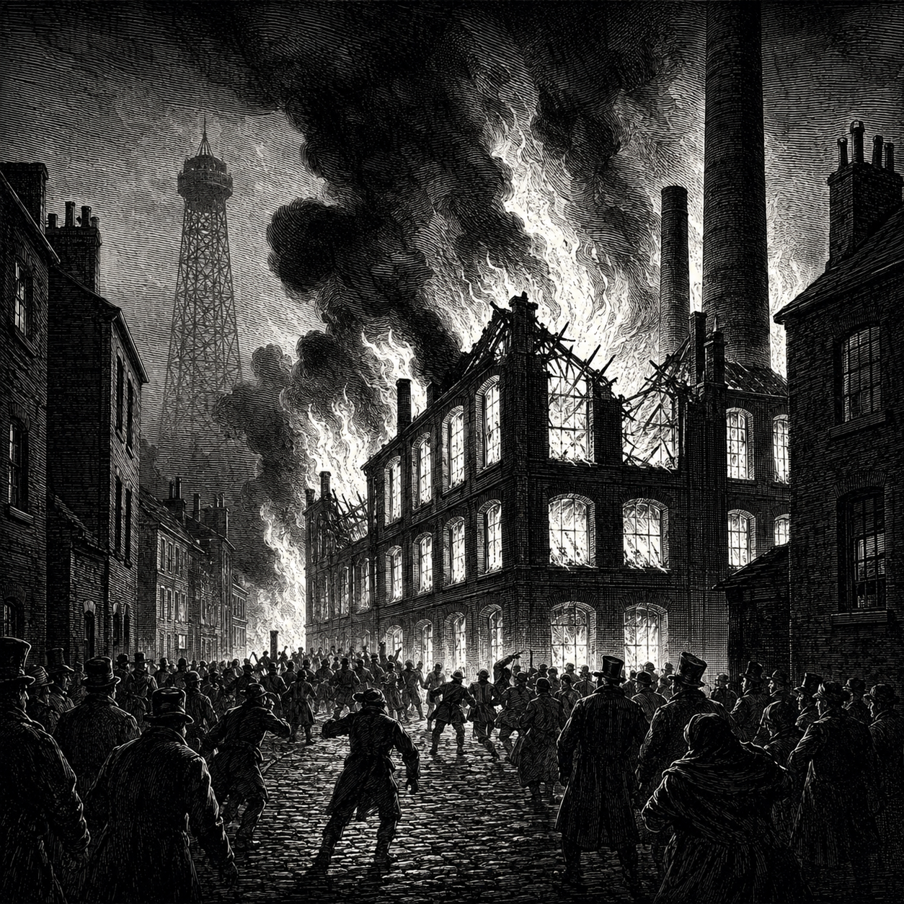
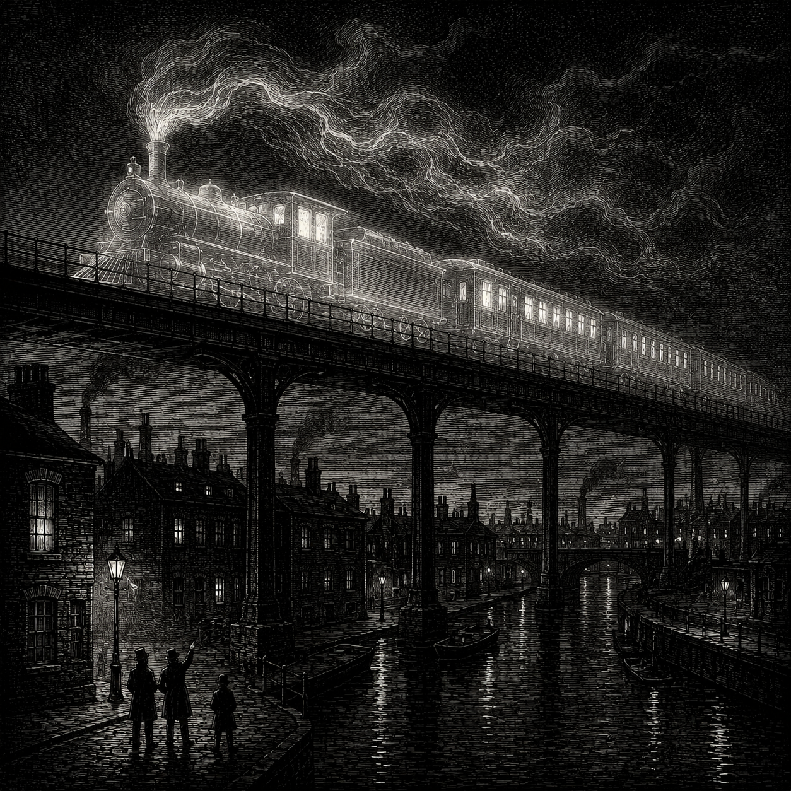

The Dalmorrian Boiler Works, Copperglass Lane, Charhollow, as seen in the hours following the explosion. Two workers perished. The facility is a total loss.
In the early hours of the 14th, flames consumed the eastern wing of the Dalmorrian Boiler Works on Copperglass Lane, Charhollow, claiming the lives of two workers and reducing the district’s newest processing facility to a smoldering shell. Ministry of Preservation inspectors arrived at dawn to find the primary boiler chamber collapsed and the surrounding block still warm with residual heat.
The cause remains unknown. What has confounded inspectors is that the primary boiler — a Voss-pattern pressure vessel, recently installed — was not old equipment. It was, by all accounts, nearly new. A failure of this kind in machinery of this age is without precedent in the Ministry’s incident records. One detail has been noted in the preliminary report: an unusual accumulation of fine particulate matter was found within the boiler’s internal components. The substance has been described as ancient-seeming dust — mineral, dark, with no obvious source. Inspectors have declined to characterize its significance. It is, however, considered strange.
The workers who died are identified as Cobb Barrow, age 38, a boiler tender employed at the Works for four years, and Maren Barrow, age 35, who worked the adjacent processing station. They are understood to have been husband and wife. Both were found near the primary boiler housing. Inspectors indicate they likely had no warning before the failure. The Barrows are survived by a son. The Bluecoats have been unable to locate him.
More damning still is the question of where the facility’s responsible heir was when the boiler gave way. Noble management — or their designated representative — is legally required to be present at any active industrial site, not as a courtesy but as a condition of operation. In the event of a developing emergency, only the attending overseer may authorize access to sealed equipment, direct workers to evacuate, or summon the Bucket Brigade. Workers who take any of these actions without noble authorization do so at their own legal peril, risking charges of presumptuous conduct and contractual breach. The law, in short, requires that someone with a name be present. On the night of the 14th, no one with a name was there.
Jared Dalmorrian, heir to House Dalmorrian and the named overseer of the Works, was instead at the Ironbell Tavern in Crow’s Foot, where multiple credible witnesses place him for the better part of the evening. He was collected by household staff and removed from public view before dawn. When the boiler failed, the workers of the Dalmorrian Works had no legal path to save themselves, and no one in authority to save them.
Councillor Ardren Voss issued a statement pledging to “personally see to it that our city’s laborers are protected by policies that serve their interests, not the convenience of absentee operators.” The labor unions expressed uniform skepticism. “We have heard this before,” said one representative. “We will believe it when we see it in writing and signed.”
House Dalmorrian has issued no formal statement. Jared Dalmorrian has not been seen publicly since the evening of the 14th. The Ministry of Preservation has opened a formal inquest.
A Note on Old Houses and New Burdens
Two workers are dead in Charhollow — a husband and wife, leaving behind a son whose whereabouts remain unknown — and the man whose name appears on the Boiler Works charter spent that evening drinking across the city while they burned. Those who have long questioned whether old names constitute a qualification for the stewardship of workers’ lives will find fresh and terrible material in the ashes of Copperglass Lane. The families of the dead deserve answers that “internal review” cannot provide.
We will be watching.

An artist’s rendering of the reported disturbance on the Fifth Line, based on witness descriptions. The Spirit Wardens decline to comment.
The Fifth Line has not carried a passenger in more than sixty years. Its stations are derelict. Its tracks unmaintained. There is no schedule, no service, no crew. And yet residents across five districts have reported, independently and without apparent coordination, a locomotive running the old route in the pre-dawn hours — dark, silent, and fast. “It wasn’t loud,” said a woman in Silkshore who watched from her window. “Trains are loud. That’s what I remember.” A Bluecoat in Charhollow filed an incident report. He was told to file it elsewhere.
A Rail Jack at Gaddoc Station confirmed that nothing operating out of Gaddoc runs those tracks. A lecturer in rail engineering at Charterhall University was blunter: sixty years of unmaintained track cannot be run at speed. “Whatever these people saw,” he wrote, “it was not a functioning train.” He offered no alternative explanation. The Spirit Wardens declined to comment. The Ministry of Preservation referred us back to the Spirit Wardens.
We would leave the matter there were it not for the children. Across the rail districts, they have taken up a game — they call it, simply, “The Fifth Line.” One child begins walking and chanting — Fifth Line! Fifth Line! — and others join one by one, a laughing procession winding through alleys and yards. Then, without warning, the line dissolves. They run, spin, and fling themselves at the pavement, skidding to a stop — scattered, as passengers once were scattered. They get up and do it again. No one knows where the game began.
Do you know what your children are playing? Do you know what they are calling?